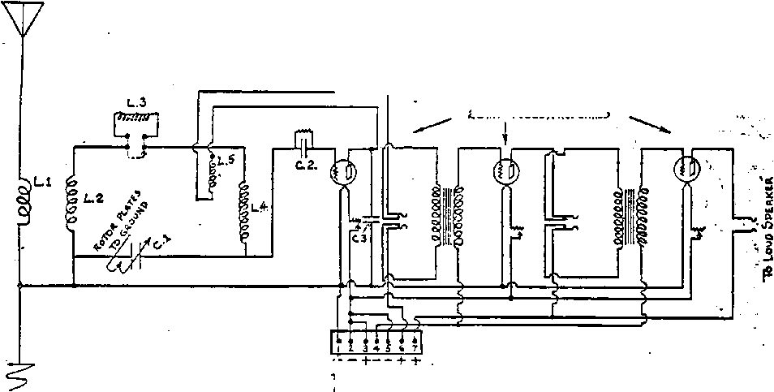

TRUTH
BUILDING RADIO RECEIVING SETS
RADIO AND
ITS CONTROL
: WAR AGAINST
VACCINATION
VoL VI Bl-Weeklv No. 13J
7 October 8, 1924
THE WORLD COURT
A DIGEST OF
: WORLD NEWS
. . 50 a copy — $1.00 a Year
; • 'Canada and Foreign Countries $ 1.50
TRUTH
BUILDING RADIO RECEIVING SETS
RADIO AND
ITS CONTROL
: WAR AGAINST
VACCINATION
VoL VI Bl-Weeklv No. 13J
7 October 8, 1924
THE WORLD COURT
A DIGEST OF
: WORLD NEWS
. . 50 a copy — $1.00 a Year
; • 'Canada and Foreign Countries $ 1.50
r VORLD
' Y DYING
NEV , j
V0RLO | BEGINNING f
Labor and Economics What We Do for Money...... s ,
Wage Levels and the Tariff.......
; Finance—Commerce—Transportation
A Digest of World News—Eastern Hemisphere . . . .
America’s Trade with Greenland.........
Valueless Road Bonds......... . . .
Political—Domestic and Foreign
Europe Preparing for War..........
Great Britain, Ireland............
Labrador, France, Germany..........
Russia, Finland ..............
Austria, Hungary, Bulgaria, Italy, Turkey, Afrirn . . Palestine, India ..............
China, Japan ...............
Disarming the Public............
Attorney General Stone’s Great Task......
Science and Invention
Building Radio Receiving Sets (Illustrated) .
Radio and its Control .........
Is an Electrical Ring About to Break? . . .
Home and Health
Pittsburgh Fighting Vaccination......
The War Against Vaccination in Pennsylvania Vaccination in Czecho-Slovakia .......
. Religion and Philosophy
The Druids (Cartoon)...........
When the Show Will Start........
The World Court............
Bible Holds Forth Solution.........
The World Court Shall Come........
People to Rejoice in (he Decisions......
Radio Will Carry Court Decisions......
The Things We Once Believed.......
Studies in “the Harp of God”........
3
3
4
6
7
8
9
20
10
14
17
18
19
17
20
26
26
27
28
28 2!)
31
Published every other Wednesday nt 18 Concord Street, Brooklyn, N. V., TL 3. A^ by WOODWORTH, IIUDGTXGS A MARTIN
Copartners and Proprietors Address: IS Concord Street, Brooklyn, N.Y., U.S.A, CLAYTON J. WOODWORTH . . . Editor ROBERT J. MARTIN . Business Maaa<« W.U. F. nUDGINGS . . Sec’y and Trens.
Fivb Cents a Corr—11.00 a Vkau Makb Remittances*?© TILE GOLDEN AGE FOREIGN Offices: British.....34 Craven Terrace, Lancaster date, London W. 2
Canadian.....« • . . 3S--4O Irwin Avenue, L’uronto, Ontario
Australasian >••••», 495 Collin* Street. Melbourne. Australia South African ...... 6 Leila Street, Cape Town, booth Africa
Entered as second-class matter at Brooklyn, N. X., under the Act at March 3, 1879
M^Massass=ss ” ■! ■ — ..-r- .. _ ,' - ==■,.. ■■■■—. „, . sgggggsgst:
Volume VI Brooklyn* N.Y., Wednesday* Octobers, 1924 Number 132
A Digest of News—Eastern Hemisphere
(Radio-cast from WATCHTOWER WBBR on a wave length of 273 meters, by the Editor.]'
Europe
THE London Daily Herald reports Mr. E. D.
Morel, member of Parliament, as saying, “Frantic preparations for war are being made all over the continent. There is going on now a more extensive output of war material than at any time since the 'peace'. The powerful industrial and professional interests of France are turning Europe into a vast arsenal/' Mr. Morel stated that the chief centers of production are in Czecho-Slovakia and Austria, where during the past two years whole trainloads of war supplies have been manufactured for Jugoslavia, Roumania, Poland, and other neighbors of Ger, many and of the Balkan States. Mr. Morel pointed out that these war munitions have been paid for by money loaned to France.
' The number of American tourists visiting Europe this year is put at 300,000. Not only is this a record toll of tourists, but their average expenditures are put at $1,000 each, which is double what it used to be. The result of this greatly increased expenditure of American money in Europe lias had the effect of materially helping the European exchange situation.
Great Britain ,
AFTER almost interminable discussions Russia and Britain have finally come to an , agreement of much the same Icind that a family comes to when they have had a good, old-fashioned family row. These nations have agreed for the present to forget everything that hap, pened during the ten years from 1914 to 1924. .But the Soviet Government is ultimately to pay a lump sum which will be divided between the sufferers by its acts, after a commission has determined just what these sufferings amounted to.
p The treaty between Britain and Russia omits all mention of the king of England,- This is > the first time that such a thing has ever been- -J done in a British treaty. The reason for this. : j is that there is no head to the Russian Govern-^,5 ment, and the treaty was made not in the name -e of any Russian individual, but in the name of the Union of Soviet Socialist Republics. It is not expected that the king of England will sign: the treaty, there having been some intimations t that the Soviet officials were unwilling to sign a treaty bearing the signature of a king. .
About a year ago, Philip Snowden, the pre- v sent Chancellor of the Exchequer of the British Government, moved in the House of Commons ;•/ a resolution in favor of. Socialism. But the > newspapers report that on May 21, 1924, at a >■ reception at Buckingham palace, Mrs. Philip ? Snowden appeared in a gown of soft, jade-green J crepe romain with the draperies held at the waist with a jeweled belt. Besides this, a train’ ; of silver lame shot with jade fell from her right shoulder and was held at the left side of L‘ i her waist. Moreover, she had a white ostrich feather fan, ornaments, and pearls. Evidently ■ ' Socialism pays in England! ./
S Ireland -j
HE British Government is in a dilemma over the question of the boundary between Ulster ■
and the Irish Free State; The treaty between ' Britain and the Free State calls for the estab- j lislmient of this boundary; but the British :*/ Government is unable to persuade Ulster and . -: does not dare attempt to coerce her; and yet, if something is not done, the whole treaty be- i tween Britain and the Free State becomes null ; and void. :
The Colonial Secretary, Mr. Thomas, and the ; Home Secretary, Mr. Henderson, were sum-' ?■ moned to Dublin for a hasty conference with
' • ’ • ••• ■ ; -".j
*7 ? < QOLDEN AQE
' President Cosgrave, of the Irish Free State. They arranged with Sir. Cosgrave to make the settlement of the boundary question the first business to be taken up by Parliament when it ^resumes its sittings September 30, a month pearlier -than was desired or expected before their visit to Dublin. A bill to settle the boundary question has already been introduced in the .House of Commons; but debate upon it is postponed until the end of September, in hope that meantime the Ulster Government will nominate a member of the boundary commission.
AMERICA'S trade with Greenland is practically all in the hands of one American company, which obtains each year from the mines at Ivigtut about $250,000 worth of an ore, cryolite, useful in the manufacture of alumium, soda and glass. * The total population of Greenland is only 15,000, of whom only 300 are whites.
■ . <
Labrador Prior To 1474
T\n. Sophvs Larsen, a Copenhagen scientist, reports the discovery of documents issued in
' 1474. by the King of Portugal, conferring a
viceroyalty upon Joa Vas Corte Beal, for his services in location the coasts of what is now Labrador. He states that there is in existence an atlas published in 1534 which designates Labrador as Joao Vaz Land. Leif Ericson is idso1 said to have discovered Labrador in the year; 1,000.
FRENCH people are getting up a new dic-_ tionary. The French Academy has been working on this since 1878, and has now finished the manuscript for the first part, which con-tains the letters A to H. No wonder it is hard to' learn'.French!
y- It is an interesting fact that unlike women in mother progressive countries, French women do /not have the vote, and do not have any interest Ittpolitical matters. Premier Herriot says tliat
, as a rule.French women prefer an enlightened ’ i ^protection to independence. He believes that 'French women will eventually take an interest •m the government, but that it will come gradu-Jally. The radical parties of France fear the influence of the Catholic Church if women are fgiven the suffrage.
A French invention which bids fair to reduce the dangers of automobiling at difficult crossings consists of metal plates across the roadway which, as soon as they are struck by an automobile, instantly flash lights or danger signals in front of the car itself, and also in front of any car that may be approaching the crossing from a transverse direction.
Paris claims to have the worst case of automobile insanity of any city in the world. At^ one of the crossings in the city the number of vehicles passing average 26,000 per hour for four hours. If anything could be better calculated to kill children and to tear to pieces the nerves of adults than these rushing, squawking, vile-smelling appendages of modern civilization, it is something quite outside the bounds of our imagination.
GERMANY is lining up into monarchist and anti-monarchist organizations, all more or less military in their arrangements, the monarchists vowing the destruction of the republic and the anti-monarchists promising to defend the republic with their lives. In some places the monarchists have demanded the lowering of the republican flag, and the authorities have feared to refuse. '
The New York Tinies reports that the courts of Germany and Bavaria are very unfair toward republicans, but very lenient and kindly toward monarchists. The monarchists, who have time and again tried to overthrow the republic, are given slight sentences which they are not obliged to serve, while republicans are given as much as fifteen-year sentences; and in one lamentable instance a repubEcan offender on a fifteen-year sentence was even denied , the services of an ear specialist to save his one
•good ear.
But probably it is contempt of court in Ger- -many for*anybody to call attention to what everybody knows is unjust and unfair. The. theory that courts are always courts of justice does not work out Often they are the last resort of tyrants. ,
While Germany is having interior troubles with the monarchists, she is being helped by her former enemies. The new liberal Minister of France has granted a general amnesty to
OCTQBEB 8, 1024
QOLDEN AQE
German prisoners and lias thrown open the Ruhr to 210,000 Germans who had been expelled under the Poincare regime. On a motion made by a Belgian and seconded by a Frenchman, Germany was unanimously admitted to the International Chamber of Commerce on June 28. - 4
Signs of Returning Sanity *
IT IS with a great deal of satisfaction that every normal human being reads that during the past year the same people who in 1917 and 1918 were doing everything humanly possible to starve the women and children of Germany, have been doing everything possible to counteract the effect of what was done during those days of insanity.
Indeed, one could almost wish that some of these good men and women had had a little of that goodness about them in 1917-1918, so that many children could have been spared the ravages of tuberculosis and rickets, now so common throughout Germany. In time of war it is fashionable to be absolutely heartless; but after it is all over, all the really decent people feel differently, and regret that they were so easily led into savagery and cruelty.
One man, John Borton, after describing the emaciated shoulders and legs, and the dark rings under the eyes, and then the gratitude bestowed upon himself as one of the relief workers engaged in the feeding of these children who were so unnecessarily starved, said:
"After seeing such true appreciation, I should certainly learn to be big-heartod, too; for these people never seem to tire of thanking us for the little we have done. Perhaps our theories are wrong; but I, for one, am ten times more convinced than ever before that $3,000,000 invested in feeding German children are worth ten times more as security than superdreadnaughts costing $40,000,000?*
The Lord said: “If thine enemy hunger, feed him.” But the sons of the devil say: “If thine enemy hunger, starve him"; and the worst of it is that in time of war many professed children of God^are always found working out the devil’s formula on the devil’s side of the fence.
The flower of Germany's industrial force is leaving the country. During the past year 115,416 sought their homes in other lands, nearly ninety percent of the number coming to the United States. The remainder went to Brazil! and Argentina, about 10,000 to each country.**
The Kaiser has been caught in one fib. May*; be he has told more than one in his lifetime/ but this one he has been caught in. In his; memoirs he has apologized for the perfectly j proper telegram which he sent to Paul Kruger^ at the time the Jameson raid was suppressed/! indicating that it was thrust, upon him by his? foreign office. But diaries of notables who^ were present and know the facts have now dis-Jj closed that the Kaiser was actually planning^ to go to war with Britain over the TransvaalS matter, and that the telegram was sent at the! suggestion of his horrified ministers merely as2 an alternative. Why Britain should have. pro-J tested because the Kaiser believed in Icttingl the Dutch in South Africa run their own coun-» try in their own way remains unexplained..
Germany Sick of War “Z*
ERMANY has agreed to an investigation* of her military situation at the hands, of thej
Allies, with the understanding that it be com/; pleted by September 30. Germany claims^ that what were supposed to be military organ!/; zations were merely gymnastic societies. If?; that be true, there would seem to be no need\ for either arms or secrecy. „ . J
In an official statement the German Govern*, ment says: “The German people repulse thej idea of war; and among all political elements' reigns the unanimous conviction'that secret; armaments should be rejected as impossible,., useless and dangerous?* The note declares that Germany has not built a single cannon since the war, and has less munitions than the treaty; allows. It invites the Allied investigation, and hopes and expects that because of it Germany -will find admittance into the League of Nations.
Sidney Fay, Professor of European History, at Smith College, in an address before the In-, stitute of Politics at Williamstown, Mass., de-: dared that the belief that Germany plotted the World War is a myth; that Austria went further in her onslaughts on Serbia than Germany had expected; that Germany was unable to influence Austria and equally unable to convince, the powers that she was sincerely trying to do so; that Russia unexpectedly ordered general mobilization; and that Russia twice refused to.
demobilize though’ she knew that her failure to , fud'so meant war with Germany.
Official reparation statistics show that in the ■ [five years since the war Germany has paid in ( go^-way or another on account of reparations ; l^jht-and one-hal£ billion marks. One^third of ■ ^msjamount has been eaten up by the army of < gwcupation. These figures do not include the Rvalue of the seizures in the Ruhr.
SfeThe keenness' with which the Germans are i (Scrutinizing every opening that may lead to the tasking of. an honest dollar is indicated in despatches that the Krupp Works are now manu* ^facturing ^artificial teeth of enameled steel.
^Ehese despatches state that already there arc height deptists working in the department. '
sA LL.attempts to overthrow the Russian Gov-i*Vernment come to the same end. The Royalists planned to seize Russia on July 8 of &ns year. Th® Soviet found out about these plans, and had their own workers take part in and even act as leaders of the movement, with . , ithe*consequence that at thei proper time the entire movement was squelched and 300 of the ringleaders were seized and executed. .
ft^It is claimed that the Russian army still numbers over a million and a half, and that within the .next three months she will have an aerial Meet of 10,000 airplanes completed and ready Mor . service. But in spite of these facts the ^Moscow Government set aside July 27 to Au-gjist 4 as a time of world-wide protest against [war. Apparently the Soviet Government is determined to have peace if they have to fight Sforit
l&The'greatest oil field in the world, the one at Baku, Russia, three and one-half days distant £rqm Md8cpw, .on the edge of the Caspian Sea, aspentirely under Soviet control. It is now . Nearly up to prewar production. Russia ex
Parted $5,000,000 worth of oil in 1923, and expects to nearly or quite double this during tho present year.1 The Baku fields have recently * installed new ^American machinery worth $2,
000,000..
feixi the southern part of Russia at this time there, isa vast section of country, including blocks of the cities of Odessa, Saratoff
S&d'Tsaritsin, that seems to be sliding into the QBlsdtSea. Several entire blocks have been so .shaken that the houses have fnllon into ruins; mid in one of the principal bathing resorts more than half of the houses have been destroyed. The slow movement is supposed to be due to a shift in the level of a vast underground sea.
Business conditions in Russia continue to improve slowly. Agriculture is up to ninety percent of prewar record; wages are sixty-live to seventy percent of prewar record; the ruble has been stabilized, with the foreign trade balance in Russia's favor. Industry as a whole is even yet only forty-five percent of prewar record. '
The principal cathedral in Russia, St. Isaac's, at Leningrad, requiring forty years to build, and costing over $11,000,000, is to be turned into a museum. Since the separation of church and state, and especially since the discovery of the cotton saints, collections have been so poor that the clergy who once had the responsibility of caring for the stuffed saints can no longer make a living.
Two can play at the game of making claims for damages. The so-called civilized governments have many and just claims against the so-called uncivilized government of Russia, and have been seeking in vain for some way to collect these claims or regain possession of seized properties. Now, the Russians are compiling claims against Britain, France, United States, Japan, and other countries for damages done to Russian property in the many and various attempts made between 1918 and 1921 to prevent the Russians from being misgoverned according to their own peculiar ideas.
The New York Times reports that the Russian Government is planning to put a radio receiving set into every home in Russia and to radiocast news of the day, speeches, music and other entertainments to the people. It seems to us that this is an excellent educational program.
Russia has done much for common people, but it still has the standing disgrace of a state lottery similar to that which was maintained in the State of Louisiana a generation ago.
FINLAND has a farmer as premier, and the new premier is going about his business in a sensible manner. All land must be used by the owner, or he must sell it to the government. In
this way all the large estates are being broken up and divided among the men who actually do the farming. Mr. Kallio, the premier, states his hopes and plans in a single sentence which is remarkable for the wisdom crowded into so few words. He says: “If we can so adjust our agriculture as to have each farmer the owner of his own land, and then have cooperative enterprises to enable the farmer to realize on his work to the fullest extent, we shall have no fear for the future of Finland.” What is good for Finland would be good for the United States.
Austria
AUSTRIA has done the wise thing in electrifying her railroads despite the initial cost.
The nation’s coal bill shows a tremendous saving, and the saving is permanent. The Commissioner General of Austria points out that only a few of the Vienna banks were involved in the speculations of last winter, and that those not involved are in good condition. He states also that as a result of a stable currency the standards of living and of wages have greatly improved.
Hungary
AT A brewery in Hungary a snake crawled through the bunghole of a beer keg. Then the keg was filled uuth liquor; and the snake, in its struggle to escape being drowned, discharged its venom into the beer. When the keg was tapped, the first two men who were served from the keg dropped dead in a few seconds. Then the keg was opened, and the body of the snake was found. Many of the dry agents in this country are apparently on good terms with the brewery people; and we take the liberty of suggesting this scheme to them as a plan to make the country really bone dry. It should be a relatively easy matter to obtain the snakes. Most people who have hung around breweries long enough have seen plenty of them.
The loan which has just been made to Hungary by the international bankers follows nearly tlie lines of the loan which has done such great thihgs for Austria. In accepting these loans, these governments agree to abide strictly by the rules laid down by the bankers through their mouthpieces; namely, the Council of the League of Nations.
Bulgaria _
IT NOW transpires that J erdin^^iwH^W!^ king of Bulgaria at the time<of?titS-l^j3® War, is a devotee of astrology, divinatibn^by? sards, and of spiritism in many other fbrmK It is known that this was true of; the- German^ Kaiser and the Russian Czar, and was very probably true of most of the rulers responsible^ for the World War. The Scriptures declare? that the World War was caused by demons^ and we now see how this was brought aboufch^
Italy
ROME has just had two noisy demonstration?-against Mussolini in the streets, in whieh$ the crowds shouted: “Bown with Mussolini!’^ For some reason the police did not interfere^ It is not known whether the police were underx instructions from Mussolini to remain inactive^ or whether they themselves were in sympathy! with the demonstrators. 1
Turkey
A LAW has just passed the Turkish Parlia-’J ment forbidding polygamy. This is in line 5 with Turkey’s rapid progress in the right di-£ rection on many other subjects. As a matter* of fact there are few polygamists in any country^ -now, economic conditions having made poly-;; gamy impractical. ,.
In the hope of preventing the constantly re-£; curving wars between the two countries, Greece ! and Turkey are exchanging millions of citizens, •« involving one of the greatest panoramas of hu-*? man suffering ever witnessed on earth. Greece, ?: already overcrowded, is receiving again to her ~ o^ti shores descendants of those who went into J Asia with Alexander the Great. Greece is send-3 ing back 350,000 Turks who, until now, have^ made their homes in Greece; and she is also^ compelled to return to Turkey tens of thousands of Armenians who have sought refuge within;? herborders. '
Africa
IN THE United States a few years ago, and possibly even yet, any one advocating Communism was in danger of being deported to^ Russia or sent to prison. Accordingly, it is somewhat amusing to read in the New York^ Times that in an official report just sent to the.^

■rri'j. ■:'■■'—■ /
*■<■.’: < GOLDEN AGE bBoo«™, x.t.
Deague of Nations, the statement is made that in Southwest Africa there is a district where Communism has been tried among the natives, and that the plain is working satisfactorily. g:The Times might have gone farther and ocplained that the practice of Communism is is. old as the history of mankind, and is the |hethod uniformly adopted by primitive peo-tles in all ages to prevent the non-use or the isuse of land except fo'r the common good, to jrevent the accumulation of wealth in the hands if:the few, and to prevent the starvation of inybody. :
if’An earthquake has just split one of the rivers if JBritish East Africa into three parts. This occurrence suggests to the mind one of the aethods that may be used in causing streams o break forth in the deserts, as the Scriptures oretell will be the case during the age now open-ng. If, as is claimed, the whole Sahara Jesert rests upon an immense lake of fresh rater, it is not outside the realm of possibilities iat earthquakes, volcanoes, and boiling springs lay throw these waters to the surface.
-The Prophet says: “In the wilderness shall waters break out, and streams in the desert, ind the parched ground rshall become a pool, nd'the thirsty land springs of water?* In nother place the same Prophet also says: “I 'pl open rivers in high places, and fountains i.-the midst of the valleys: I will make the ilderness a pool of water, and the dry land prings of water ”—Isaiah 35: 6,7; 41:18.
How the plague of sleeping sickness, which tfone period cost the lives of 100,000 natives i .the province of Uganda, was finally brought uan end was interestingly explained by one E the physicians in attendance at the conven-om at Toronto held for the advancement of deuce. -A careful study of the disease showed iat.it was restricted to the islands of Lake ictoria and the territory lying within a few Ues of the shore of the lake. Subsequently it as-proved that the disease occurred only in te .territory inhabited by the tsetse fly. When ie population was moved back a few miles from te shore* of the lake, the disease died out.
;The district of Ben Gardane in the Sahara ysert, which fifteen years ago was merely a tfting place for caravans, is now (thanks to drilling of-artesian wells) the centre of an iye tract supporting 20,000 people.
The treasure found in the tomb of King Tut-Ankh-Amen is estimated to be between $15,000,-000 and $40,000,000 actual value, while as historical matter it is priceless. The discovery of the tomb has effected the fashions of clothes, jewels, and furniture throughout Christendom.
Samuel Uktermyeb, one of the foremost lawyers of America, on a return from Palestine reports that on an average 1,000 new homes are being erected annually in the Holy Land, most of them of concrete, of the two-family style. These buildings are of the most modern design, and are being constructed in suburbs planned after the best European and American models.
Palestine has one entirely new city, the strictly Jewish city of Tel-Aviv, built since 1909, in which there are now 1,500 buildings, water supply, electric lights, sewers, and .everything else up to date, even including a municipal debt contracted through brokers in New York.
Direct steamship service between Odessa and Palestine, which was broken off by the World War, has been resumed; and on the first boat to make the trip 171 Jewish emigrants left Soviet Russia for Palestine. Zionism is in disfavor with the Soviet Government. The expulsion of ’ /
Zionists from Russia to Palestine is a direct fulfilment of the prophecy of Jeremiah 16:14-16, which please see. Late reports from Poland show 3,622 Zionists from that country alone planning, to make their home in Palestine as soon as permission can be obtained. Among the Zionists planning to return to Palestine are several thousand Maranos. These Jews are nominally Christians, having been compelled to accept Christianity in the days of the Inquisition; but they are still Jews at heart, and have expressed their desire to join their Jewish brethren in the Holy Land.
r
India \
FIGURES have just been published that in the flu epidemic of 1918 not less than 12,-000,000 people died in India alone. There are places in India where in some entire districts there are as many as 578 persons to the square mile, an area of a little less than one acre per -person.
.. The riot in Delhi, India, which caused the ’death of six people and the injury of a hundred, resulted from the (having of sacred cows / .through the area where the Hindus live. Cows are sacred to the Hindus, but not to the Mo-hn.Tnrneda.ns, who intended them for sacrifice. The death of the American Vice Consul in . . Persia was because he took a photograph of a ’ sacred well. Some of the superstitions prevalent in the Western World are no less unreason-»able.
The mountain climbers who have been engaged recently in the effort to scale Mount Everest, report having found some signs of life at even the highest points which they reached. Some forms of plant life were observed at 18,000 feet above sea level, while spiders were found at 22,000 feet. The highest residences of human beings are at 15,000 feet. In the state ’ of Colorado there is a number of good-sized towns and the large city of Leadville at high elevations. Leadville is 10,200 feet above sea level.
Interested by the repeated efforts of the British to climb Mount Everest and by the near success which has several times greeted their efforts, a picked corps of Swiss Alpine climbers is now planning to attack Mount Everest next spring. Instead of carrying a heavy oxygen apparatus they purpose to carry small vials of oxygen for use whenever a climber is overcome from want of air.
CHINA'S affairs are always in a muddle these days. The bandits seem to be having tilings much their own way. The protests of foreign governments get more and more emphatic. The cabinr lias resigned. China needs sorely just such a government as the Lord has promised to give. ' How glad the Chinese, and everybody else, will be when the Lord brings order out of present chaos!
China has the humiliation of having to present allvher legislation to foreign legations before it can go into effect. She recently
passed a trade-mark law, which was^acq^t^ by the legations; but when they fouhdfflfaf ifc cut down some of the foreigners’ nghti^'to^e^ ploit the Chinese, the legations, notifiedfifife Chinese that the new law would not.bejallawedL to stand. " . . -
The female students of the'Chinese/Natimiaf University have started a woman’s movement; in* China demanding the destruction,, of Xthei ancient Chinese conception that woman ;iiin^; ferior to man, the estoppage of polygamy: and; of the purchase and sale of women, and ofrthtf? anti-women Chinese judicial system,»i equal? rights with men in civil law,.the right-taen^ gage in politics without police' interference;' equal pay for equal work, popular female education, and an open door to all trades and pro-fessions, along with protection of maternity..
TV/TONEY seems to have the principal say in -LVJ- Japan in these days, as it has elsewhere. At the elections recently ’ concluded in that country it is estimated that something over $20,000,000 were spent by the contending parties; and in Tokio one of these men expended $150,000 and won the place for which his princi- ,
pal opponent expended $100,000. In one case a- ;
candidate for office had only $10,000 to spend, and received only 90 votes, while his successful rival received 3,000 votes. , ;
The Japanese legislature has hired' fifty : strong men to act as sergeants at arms in an ! effort to preserve order in the Diet and to pre- ‘ vent ruffians from breaking up its sessions. ; At a recent session there were fist fights and deluges of members by water thrown from the balconies. ,
Not to be outdone by the Christian countries-of Europe, the Japanese.Government is now < having built in Italy several planes entirely of' . metal, which will enable them to fly from Japan* to the Philippines and back, and while they, are" on the way to drop a ton of poison gas or some' other product of modem civilization upon their American friends.
"Along the river's summer walk The withered tnfts of asters nod;
And trembles on its arid stalk The hoar plume of the golden-rod.
"And on a ground of somber fir . ,
And azure-studded juniper, . .. v -
The silver birch, its buds of purple shows;
And scarlet berries tell where, bloomed, the tomc*
THE question, Wliat constitutes a good radio set could be answered in many ways; also almost everyone would answer differently. 'As usual the one commenting would be sure . to explain that the set he has at home "beats them all”.
Before describing the construction of a Radio ' Receiver, let us look at some of the causes of loss of energy, and see if there is not a way to remedy this matter;' for with a good antenna, good ground, one vacuum tube as a detector and a properly designed circuit, this alone should bring in almost all the stations one would expect to hear comfortably. The reason why the average set does not bring in the station we desire is not because the energy is not there to be picked up, but because the circuit and the instruments of the average Radio Set are of such high resistance that the feeble currents cannot fight their way through or are grounded by a poor variable condenser.
ET us learn the lesson, and learn it well, that a high resistance circuit is the cause of the loss of two of the most importaut factors in Radio; (1) the set not tuning sharply, and (2) the absorption of feeble currents that could otherwise be tuned in to clear audibility.
Now, then, is there no way to overcome this ernnmon enemy? There surely is; but'strange to say, from the layman radio-man to the large manufacturers, they all seem to take the longest way home. They invent fancy circuits that make your head swim to look at. They discuss at long lengths, radio frequency amplification. They use more tubes to make the set look better. But every tube and transformer is bound to have its nerve-racking inherent noises; and when speech or music is heard, it is almost unrecognizable due to high amplification. The more simple way often proves to be the best.
Imagine that we could follow the current induced into our antenna by a distant radio station, all the way through the set and to the ground. The very first thing that could be seen is the resistance of the fine wire with which the coils in the average set are wound. But it does not slop here. More important is what the wire is wound on, and the resistance of the things that axe near the coils; still more important is the varnish or shellac with which the wire is coated, and sometimes the insulation of the wire itself.
A perfect coil would be wound on air and insulated with air. Such a coil, of course, is not possible to make; but we can make one pretty close to it. We regret to say that such coils are not to be bought on the market, but must be made at home. They are easily made by simply passing the wire in and out between brass pegs set into a board. ।
The coils should be 3^ inches in diameters Since we want a very low resistance coil, the wire used is number fourteen, double cotton covered. By all means avoid fancy wires, such as stranded or Litz wire; and when soldering use nothing but rosin. Also, as far as possible, avoid putting tape on the coils. Try to cover the wave length range with a single coil. Where this is not possible, cut in a separate loading coil, not too close to the main coils. Now we have a really good low resistance coil.
HE next question is * a matter of a good' condenser. This is as essential as a good coil; for it is absolutely-useless to take pains to construct a good $oil and use a poor condenser. This fact cannot be over-emphasized. There is a great deal of difference between a fairly good condenser and a correctly designed low resistance condenser. The best type is that known as the grounded rotor variable condenser, which has metal ends. The names of three of the best are; Allen D. Cardwell Condenser, General Radio Condenser, and the General Instrument Condenser. The number of really good condensers is small indeed. In mounting the condenser, always connect it so that the wire to the grid leak and grid condenser comes from the stationary plates, and the wire1 to the filament comes from the rotary plates. It is then possible to tune in signals without trouble from “hand capacity”, one of the most exasperating things in Radio. The proper capacity for the condenser to be used in the circuit described herein is .0005, which is a 23-plate variable condenser with vernier.
The next piece of apparatus essential of good quality is the detector tube socket. It should, if possible, be made of porcelain; the next best is hard rubber or moulded bakelite. The two
. amplifier sockets need not be so particular; for . they handle only audio frequencies.
‘ After all our beautiful arrangement and painstaking effort, let us not spoil the whole .. thing by cramping the works too close together.
Run the leads in the air if possible; keen the ’ coils away from the condenser; and lot nothing touch the coils, except where they arc tied to the small wooden strips by waxed cord.
™ Sometimes when the receiver is completed ypnd put into the cabinet, the cabinet affects the be used in our new well-made
point in its. favor is that (1) it"caifbeLma&£ to tune much more sharply than can;thifc'aatg^^ circuit; and (2), it does not re-transmr?Sgjmi^ as badly as does the single circuit, :wIncirJ5x^ torferes with our neighbors. ’
The number of turns for each coil ai^aidfbl^ lows: Primary coil, eight turns.; first section^ of ■secondary, twenty turns; second section^ secondary, thirty-two tarns.- The / primary should not be too closely coupled to'our good
Sola Tums,P«8Mri«p
C c B AS 90
h VolTS
ii *
7
TERMINAL SOB AD For back of set
f. — A Battery 2+ A »•
Ul-8 Tuans Basket Weave Coil L. 2-20 " «» »• ■ «
L.3-3O n Honeycomb «
L. 4-32 it Basket Weave »
US-35 « Honeycomb •
C. |-Z3 Plats Condensed. Cap..0009
C.2-00023 Grig Condensed.
G3-0Q2. 3r TMs Condcnsca
5. -
6. +
VOLT B Battwy
tuning. Therefore the cabinet should be made large. If copper shielding is used, it should be kept at least two inches from all coils and ap-
- paratus. x
A FTER almost two years of experimenting with new circuits, we have actually proven that the old double circuit employing an Apcro-die Primary is the best. So tins is the circuit to secondary circuit. Somewhere between 14 an<^' y2 inch is about right. To couple it closely will increase signal strength, but the sharpness of tuning will be lost. All coils are wound with number fourteen double cotton-covered wire.
The first section of the secondary should be kept at least six inches from the second section, and it is a good idea to place the variable condenser between those two coils. These ooils should be wound as tightly as possible;, for. hand-made basket coils always vary slightly in inductance, and the number of turns determines the wave length of the receiver.
The model was especially designed to receive Station WBBR, and to have the peak of effi-. ciency occur at its wave length, or 273 meters. ^Without the loading coil, the set will tune from 200 to 375 meters; and with the loading coil, - will tune from 350 to 550 meters, thus affording ease of tuning over the entire band of broadcast wave lengths.
in order to get the set to oscillate on high waves. : or while the loading coil is being used. The best method of determining whether or not your set will oscillate over the complete band of wave lengths, is to moisten the tip of the finger and keep tapping lightly the part of .the variable condenser which is connected to the grid leak. A weak click is always heard; but 5 if the set is oscillating properly, a very pronounced click will be beard in the head telephones. If this oscillation click is not heard|£“
it is a sure fact that your tickler coil is reversed,
The tickler is a 35-turn honeycomb coil. The ... small wire in this instance is permissible because it is carrying audio frequency. The . location of file tickler is at the lower end of the second sectlpn of the secondary or farthest end away from the grid lead. This seems to be a better location, as it builds up the signals in ’ a greater degree than if it were placed at the upper end of the secondary, as the convential method is. It was necessary to employ ext^cme-< ly close coupling of this tickler to the secondary
■■' 2- . .
and only needs reversing of the leads of this coil. » ”
Just a word in regard to the winding of all • coils: It is very easy to make the mistake of winding one coil in one direction and the other . coil in the other. If this is done, the set will : not work. Make it a point to got the honey- 1 comb coil that you expect to use as the tickler 'iT coil, determine the direction in which the coil is wound, and wind the other coils in the same >■ ■
. direction. In*this way it is not possible to make the mistake and have the usual worries of won-
. dering why it does not work.
AS STATED before, when designing ihis set we were more interested in having its greatest efficiency occur around 273 meters. Thus, in order to raise the wave length to stations that use higher wave lengths than the set would go, it was necessary to insert in the secondary circuit, as indicated in the Schematic Diagram, a loading coil. We concluded that a fifty-turn honeycomb coil would suffice. If greater efficiency is desired, a like coil can be wound by hand to replace this honeycomb coil. In mounting this coil, try to get it to the back of the cabinet; and it should be turned at right angles to the rest of the coils.
A satisfactory switching system to cut this coil in and out has not yet been determined; for it is a bad policy to short circuit it by a switch fastened to the panel, because this is the grid lead side and also the high voltage end of the coil. So the best way at present is to cut a short piece of flexible wire about three inches long, solder a clip to one end of this wire and the other to the honeycomb coil; then when short waves are desired, simply short circuit the loading coil.
MOUNT the coils in the center of the panel, and at least 2 inches away from the panel. (Do not shield the panel.) Construct three hardwood pieces by y>, place the lower ones 2 inches apart, and the other at the top of coils. Tie the coils in place with waxed string. It would be still better if these pieces were first boiled in paraffin oil. The two lower pieces will afford the hinging of the tickler coil, so that coupled to the secondary it can be variable. Run the flexible leads from this coil to the plate and to tlie Detector jack. Also make the grid lead h’s short as possible. Use only the very best Mica condenser, the capacity .00025 and 7 to 9 megohms grid leak for UV199 tubes
and for UV201-A tubes use•?. capaci^r/^TO^^ MFD, and two to four megohms grid
by-pass condenser is very essential, ahd^hasJK* capacity of .002 MFD. / <
THE above precautions apply to aAme-tufi^ set just as well as to a three-tube'f-oneil To amplify signals of minute strength is quite^ difficult; . but if good transformers\ are&iiied* and carefully wired, also if a “C”-Battery
used, it is quite possible to amplify these signals:' (if they are not too weak) to fill a room yery' comfortably. " v
A complete Schematic Diagram will be-found" herewith. x
Summing up the matter, the following should be expected:
1. New stations you have never heard be* fore.
2. Greater selectivity than the average radio set. ;.
3. Control of regeneration so that weak* signals can be worked up to the point where they are almost as loud as local stations.\
It does not seem real that just by overcom-ing the resistance of an ordinary circuit such results can be obtained; but you, as well as everyone who listens, will be astonished that ■ a simple set will do such work. A similar set. was made up for amateur work; and several amateurs in Europe were heard while the set operated in New York. It was also compared with a large set of many tubes; and the signals were brought in almost as well, but not quite so loudly, on account of great amplification of the ’ large set.
There is nothing hard about building such a set. Remember to stay as close to tlie sug-' gestions herein given as possible. Also use a long antenna.
In a later issue, an article describing thereon-struction of a three-stage resistance coupled" amplifier will appear. The combination of the above and this amplifier should make the ideal radio set for both distance and pure reception.
In G. A. No. 127, page GSO, “Tai vania” should power plant on the Auja,za smill river that runs read “Tel-Aviv. Also the electric current for into the Mediterranean Sea near TpLAv?v. Thia ; this city is not generated by the Jordan but by a new city is growing rapidly. , / ; H
IF YOUR regenerative set snorts, wheezes, and then dies out, do not too hastily blamo yourself because you cannot solder like a plumber. It may be a kind of phthisic trouble;
= for big business controls the air. Just compose ^ yourself, and remember that when, the set does - work'it* vindicates some “credulous” persons
.who still believe in miracles.
< Paul, pleading his own case before Agrippa, almost persuaded Agrippa to be a Christian. Festus thought Paul mad. As far as both these were concerned with this Radio experience of Paul's it was merely hearsay with them; they had* only Paul's word for it. From then until the present time others have said in substance: “We have only someone else's word for it that Paul said he heard this voice; therefore, it is hearsay upon hearsay. So if Festus, who was there on the ground, doubted Paul, why should we believe?”
But during this time there were others who believed with a whole heart. They were called credulous, sometimes fools. For believing such "madness” they suffered every conceivable kind of punishment, from rotting in filthy prisons to adorning a cross. Today they stand vindicated, even in the eyes of those who refuse to believe in miracles. Radio has vindicated them, the “invention” of this wonderful appliance is another proof of the infallibility of God's Word.
Like all things, however, that come from the presence of the Lord, Satan grasps it with a desperate hand, much’ as a dro\vning man grasping for a straw. No doubt those who read here have oftentimes heard someone make a remark similar to the following: “The only thing we have that is free is the air; and if there were any method for big business to control that, it would not be free.” That time has arrived.,, By means of radio, to a large extent they control it at the present time.
It seems that one of the prime movers in gaining such control is the American Telephone and Telegraph Company. It is claimed that this giant has long been buying and obtaining rights of various patents that he might secure entire control of the radio field. It is even said that so much of the funds of this giant organization has been spent for patents and in securing patent rights that the stockholders have flooded headquarters with complaints, and asking information in regard to their money
By Chas. Henry East
being spent so lavishly with no certain knowledge of a just return.
Readers of The Goldex Age are familiar with the antitypical giants. All perhaps, have had personal experiences with them; and it may interest some to know that the Federal Trade Commission declares that seven of these giants have merged into an eighth, The Radio Corporation of America, and have “combined, conspired and created a monoply ” The seven cited . are: The General Electric Company; American Telephone and Telegraph Company; Western Electric Company, Inc.; Westinghouse Electric and Manufacturing Company; The International Radio Telegraph Company; United Fruit Company; and the Wireless Specialty Apparatus Company.
Perhaps the reader will better understand the situation by reading the following extract from the Federal Trade Commission's report:
“paragraph thirtt: By reason of the facts and acts of the respondents set forth in the preceding paragraphs numbered 8 to 29 inclusive, the respondents ’ have combined and conspired for the purpose and with the effect of restraining competition and creating a monoply in the manufacture, purchase and sale, in interstate commerce, of the Radio devices and apparatus, and other electrical devices and apparatus, and in domestic and trans-oceanic Radio communication and broadcasting by the following means:
"(1) Acquiring collectively, directly, and indirectly, patents and patent rights covering all devices and apparatus known to and used in any and all branches of the practice of the art of Radio, and combining and pooling, by assignment and licensing, rights thereunder to manufacture and use and/or sell such devices and apparatus, competing and non-competing, and allotting certain of such rights exclusively to certain respondents;
“(2) Granting to the Radio Corporation of America the exclusive right to sell such devices and apparatus manufactured under said patents and patent rights and restricting purchases by the Radio Corporation of America devices and apparatus useful in the art of Radio to certain respondents and apportioning such purchases among them;
“(3) Restricting the competition of certain respondents in the respective fields of manufacture and commerce of other respondents; -
“(4) Attempting to restrict and restricting the use of Radio communication and/or broadcasting of articles manufactured and sold under said patents and patent.
“(5) Acquiring the equipement heretofore existing in this country* essential for trans-oceanic Radio communication and perpetuating the monoply thereof by refusing to supply to others apparatus and devices ncces-' sary for the equipment and operation of such service;
“(G) Entering into exclusive contracts and preferential agreements for the handling of trart-oceanic Radio traffic, and the transmission of Radio messages in this country, thereby excluding others from the necessary facilities for the transmission of Radio traffic;
• “(7) Agreeing and contracting among themselves
l^rto cooperate in the development of new inventions relating to Radio and to exchange patents covering the results of the research and experiment of their employes in the art of Radio, including patents on inventions and ' devices which they may obtain in the future, seeking thereby to perpetuate their control and monoply of the various means of Radio communication and broadcasting beyond the time covered by existing patents owned by them or .under which they are licensed/*
This report was signed by the Federal Trade Commission with only one member dissenting—
Commissioner Vernon W. Van Fleet£lt<afeems2 that the only opposition which developed-to^ Commissioner Van Fleet's appointment Commission was that of Senator R. M.lLaFbl-^ lette, that stern champion of the people'^rights^ And now that it appears that Van; Fleet has; taken his stand on the side of big'business, seems as if the Senator saw a good way ahead/; ’ It is stated on very good authority/;that' Senator Watson of Indiana was instrumental" in securing the appointment of Van Fleet by/ President Harding; and it is no secret that. Watson is a bitter foe of the Federal-Trade; Commission. ». / •'
The very fact, however, that Satan is mat-? ing such a mighty effort to block widespread use of this wonderful means of communication., is proof of his present precarious predicament;1 and further, that it is to be one of the chief instruments of the Lord in carrying a blessing to the people. - ...
THROUGH the medium of The Golden Age, may we express a word relative to “Disarming the Public”, that is, the individual?
A few years ago, I had never heard nor seen anything upon the subject, save what I had written; and I must say that I have written quite a bit on the subject, to which the files of many newspapers, periodicals, and magazines will testify.
I make this personal reference to show, though advocating questions about which the public had thought or heard little, that to keep sowing the seed will raise a sentiment and, will produce good. Some of my manuscripts have !■■■*• been rejected on the grounds that they were new questions, or wild and visionary, with no hope of materialization.
That body of lawyers in San Francisco the other day went down on record stating that the existence of deadly weapons did contribute to crime, and (he manufacture and sale of such should be prohibited by law. We expect to hear almost all organizations assembled in convention and all educational forces speaking out pretty soon on this question. So we expect to see all these questions wc have been advocating, at a sacrifice of time and money (my stenogra^ pher bills are heavy), bring forth fruit for good and for God.
Now while we class jack and bowie knives; stilettos, knucks and poison as deadly weapons and'instruments, yet there is the revolver, the ugliest and the worst. With this we will, deal more particularly. „.v
The law is inconsistent and weak in that it allows the manufacture, sale and existence of things which it does not allow to be carried or/ used. It is like the mother who gives the child-a tin horn, and then punishes the child for blowing the horn. > - : ■
It is presumed that the purpose of the courts and the law is to punish and prevent crime, promote respect for the law and obedience thereto. This being true, why do the law and courts not remove from weak and frail humanity the5' implements and agencies that produce crime?
It can be clearly demonstrated that to be armed does not protect the home, the shop or the individual on the highway. Robbers or on-einics seeking life or money are armed, usually skilled in the use of weapons, fearless, care not. for their own lives nor the lives of their victims. get the drop on them, so that it is only once in a great while that the victim succeeds in defeating them.
In the homo one has little chance with a wideawake burglar with his search-light, while the victim is half-asleep or excited. For the home, ’’ • burglar alarms could be so arranged that one -could touch them off with one’s feet at the foot . of the bed or. by hands on the headboard or under cover. ,
The presence of deadly weapons, especially revolvers, will cause one to agitate and court difficulties, whereas if unarmed one would court peace. Firearms are dangerous; and one who is physically unfit for fighting or a coward will create death and destraction if armed.
When a drunk, insane, mad or infuriated person takes a gun, somebody will go down, whether it is the intended victim or not. There is a chance and hope for escape with the use of all weapons, save the revolver; but when that is brandished, somebody is going down. The tendency to possess deadly weapons is a bequest of barbarism, at the behest of mammon. There is big money in making them.
There is no question, and the San Francisco Bar Association bore testimony to it, that the existence of weapons, particularly revolvers, bears a close relation to crime; that ninety percent of certain crimes have a pistol associated with them.
. The existence of destructive implements, and particularly the pistol, invites and encourages crime,. accidents, and suicides. Being a quick and easy means of death, revolvers especially encourage suicide. Many a suicide would never Lave tried any other means. The easy access to weapons, no questions asked, invites many recruits to robbers.
A murder means more than that some family has been made minus one or the population reduced; that ofttimes orphans and widows, broken hearts are on both sides; that of necessity there must be a funeral, that expensive courts must be set in action.
After all the evil and crime coming from the-manufacture, sale and existence of deadly weap- . ons of Ihe unlawful type, it is safe to say that not over a thousand people are highly profiting by the manufacture of them. Retail merchants make small profits, and would sell some-* thing else were the weapons taken away. We have found that the weapons are useless and dangerous, and invite crime; that they servono purpose save, it may be said, for officers of " the law. In England officers do ndt carry weapons.
Therefore why should the public suffer so? Is it for the benefit and profit of weapon manufacturers?
All the reform and educational forces, such as movies, platform speakers, preachers and publications, should go to work to build up a sentiment and throw on the light Congress should empower the President, and he should issue a proclamation calling on the citizens to come in and lay down their arms at cost, am 1 should enforce the search and seizure act. This vast amount of precious metal should be turned over to sewing machine and watch factories.
If all the valuable and precious metal tied up in these things, all the accidents, suicides, murders, hangman’s ropes, courts set in action as a result of crime produced by the existence of weapons, inmates of prisons, orphans, widows and funeral processions were arrayed before us in one great panoramic vision, we would stand amazed, and wonder why it all was. .
I' AM giving you below a notice that was published in the Tunes Picayune of this city on June 3, 1924, page 18. It appears that the parish of fit. Mary issued bonds on what is known as the Road and Sub-Drainage District ‘ Number One. The land is taxed to a ceriain amount to pay the bonds, and to pay each year .. the interest. It appears that after these bonds were issued, and the work was done, the cost, of the road and drainage was largely in excess of the value of the land. The result was that the unfortunate farmers were unable to pay their taxes. The land was sold, no bidders presenting themselves; and inconsequence the land was sold to the State of Louisiana for the unpaid taxes. The parish now has good
*
< r *
October 8. 1924
* QOLDEN AQE
sub-drainage and roads; but the unfortunate ' persons who invested in these bonds that gave the parish sufficient money to make the roads are simply holding paper known now as bonds which are perfectly worthless. The banks as a general rule laud these kinds of bonds up to the highest, simply, I presume, to catch the poor sucker; and after the bank maUes a good big profit on it they do not worry whether the unfortunates get back their money or not.
Saint Mary Parish, Louisiana ‘ Sub-Drainage District Number One of Avoca Drainage District
5 Percent Bonds, Dated August 15, 1911, and gust 15, 1914.
Au-
Default having been made in the payment of the interest due on the above bonds on August 15, 1923, and February 15, 1924, and in the payment of principal due February 15, 1924, the undersigned, representing^ number of the holders of the bonds, have
consented to act as a Committee to prdiect,tiie-mbSesfc^ of the bondholders. -
A majority of the lands embraced in the-Dlsfrict’ were adjudicated to the State of L)uisianafor^tixer-of 1922, and the taxes have not been paid thereoneither for 1922 or 1923. As the year of redemption covering the tuxes for 1922 will expire on or about June 24^' 1924, it is imperative that the bondholders take con* certed action, and the immediate deposit of your bonds' with Spencer Trask and Company, 25 Broad Street: * New York city, under the Bondholders’. Protective Agreement, dated May 1, 1924, is requested. .Copier of the Protective Agreement may be obtained from the Depositary. .
The members of the Committee have agreed to serve without personal compensation. . j
Dated June 3, 1924. . - :
Depositary:
Spencer Trask & Company 25 Broad Street
New York —-
Committee: John R. Longmire, James H. Kepper;* -James T. Woodward, Chairman
RESIDENTS of Pennsylvania will be interested to know that the Pittsburgh Health Club has begun a fight against compulsory vaccination, which it expects to take to the State Legislature at Harrisburg. Any Pennsylvanians who desire to participate in this movement are requested by the Health Club to write the following letter to Mr. Andrew G. Smith, Attorney, Top Floor, Berger Building, Pittsburgh, Pa., sign their full names and addresses and give their telephone number:
I, the undersigned, am opposed to Compulsory Vaccination, and I authorize the printing of my name on a petition to the Legislature of the State of Pennsylvania requesting legislation which will exempt from vaccination any individual who declares conscientious objection to the practice, or in connection with any other changes in the present laws governing vaccination against smallpox. .•
I
I i
I
i
FOR several weeks during this summer, the Director of the Department of Health, Dr.
C. J. Vaux, waged an intensive campaign of vaccination in the city of Pittsburgh. During jthis "campaign, indiscriminate vaccination was fcarried on at public clinics, and by means of jsquads of doctors, nurses, and health officials going from house to house.
■ An indication of the extent of this campaign may be seen from a statement issued by Dr. ■Vaux in the public press on August‘8, to the effect that “a survey of biological wholesale drug firms in Pittsburgh discloses that since January 1 more than 976,000 vaccine points had been sold in the city and its environments. The city had vaccinated 201,113 persons since the first of the year.” In another statement made in' the press of Tuesday, July 29, it was estimated that 568,000 persons had been vaccinated in the Pittsburgh district.
With this situation existing, a number of men and women of tliis city who objected to vaccination planned a mass meeting in protest against the campaign; and on July 27, this mass meeting was held at the Nixon Theatre, with an attendance of about 2,000. _
- The meeting was addressed by several speakers, including Andrew G. Smith, Attorney and Chairman; Mr. .Harry Bonnell, scientist and naturalist, of Washington, D. C.; and Miss Lora C. W. Little, of Chicago.
* The sense of this meeting was indicated in the passage of a resolution presented by Prof. Ezra T. Artman, of the Pittsburgh High Schools. The resolution was as follows, and was published in the Pittsburgh press on July 28:
■* “WHEREAS, the availability of world-wide vital statistics'have proven that smallpox is not prevented by vaccination; that the true preventive of smallpox and other mass plagues are sanitation, isolation and hygienic living;
> "NEVERTHELESS, the Health Director of the City of Pittsburgh, by virtue of an obsolete Act of Assembly, has commanded all persons of all ages to be vaccinated undft penalty of a fine and of having their .residence or place of business quarantined; and is, at the present time, officially vaccinating many thousand .persons daily without regard to the condition of health ’mt history of patient in each particular case; the order ref' the director being declared to apply as well to nonin Pennsylvania Dy Geo. r. iicrde . .
residents of the City of Pittsburgh who may be gm- ■; ployed in the City. ■
“THEREFORE, RESOLVED by people in mass meeting assembled: _ .
“(1) That the Department of Public Health of the City of Pittsburgh be urged to n-nnonnea exemption from vaccination in favor of persons who conscientiously object, and that the exemption be respected and recognizo by the Board of Education and by all employers, particularly the large corporations and department stores;
“(2) That the Legislature at the coming session he invoked to remove all compulsory clauses of vaccination laws, and that the opinion and pledges of candidates of the Legislature upon this question be sought in advance;
“(3) That the present city administration, particularly the Department of Public Health, be urged to remove, prevent and abate the unclean and unsanitary places in tho City of Pittsburgh. In calling attention to the unsanitary epidemic breeding places, the Pittsburgh press has performed a valuable public service;
"(4) That the expenditure of public funds for free vaccination clinics, whether compulsory or voluntary, appears to be an unlawful appropriation of public funds and contrary to statute, which provides only for free vaccination 'of such persons who are unable to pay for the same';
“(5) That the indiscriminate vaccination of all persons who present themselves, in blind disregard of their physical condition or physical history, is in violation of approved surgical practice and common sense, and is a serious menace to public health. Every consideration of humanity demands that this malpractice ' be discontinued at once;
“ (6) That the placing of smallpox signs by the Health Department, on homes and places of business as a * penalty for non-vaccination, is a practice without justification. It is the sense of this meeting that such signs should be posted only on places of contact and should ■ be placed on vaccinated places as well;
t “(7) That in absence of any afltrmitive instructions from the Pittsburgh Deportment of Health relating to hygienic living or sanitation for preservation of general health and prevention of epidemics, the Pittsburgh _ Health Club is requested to supply printed matter for ’ this purpose;
“(8) That a committee composed of the present officers of the Pittsburgh Health Club, and such other persons as may be designated by the chairman of „ -this meeting, be appointed to make effective these resolutions and report progress from time to time to the Secretary of the Pittsburgh Health Club; '
"(9) That these resolutions be printed and copies thereof mailed to persons requesting same and to all City and County officials, and to the heads of department stores and large corporations.”
Following this, on the 29th of July, Dr. Vaux issued a reply to the anti-vaccinationists, resorting to generalities and making no defense worthy of a scientific man in respect to the task which he had assumed of vaccinating the entire population of the city. In this statement, he indicated his intention to continue the campaign, expressing the hope that ninety-five percent of the city's population would be vaccinated by autumn.
During the period of these activities, the Health Director had followed the plan of quarantining the homes of those who objected to vaccination, even though there was no contact with the disease. It is interesting to note that in the press of August 8, the Director announced *^at this practice would be abandoned, and his officials proceeded to remove the signs from the houses upon which they had been placed.
Again, on August 13, the orders of the Health Director were further modified by a statement in the public press to the effect that the requirements in respect to school schildren would be changed; and that for the coming term in school, children would not be required to show a certificate of vaccination made since the first of this year, as it had been stated would be required before Admission to school.
The anti-vaccinationists held another meeting in the city on August 14, at which reports were read by the Secretary of the Pittsburgh Health Club, Mr. John F. Flood, of cases which had been investigated in which illness and death followed vaccination, and to which sufferers and relatives ascribed subsequent ill effects to compulsory inoculation against smallpox.
At this meeting, tentative plans were laid for carrying the fight against compulsory vaccination to the State Legislature at its next session in order to obtain such action as would either remove the compulsory feature entirely from the statute or cause the insertion of a conscience clause whereby conscientious objectors might be granted exemption from the vicious requirements of the Act as it now stands.
An effort is being made by the Pittsburgh Health Club to obtain the cooperation of all persons and organizations within the State of Pennsylvania for the purpose of extending this fight against vaccination into all parts of the state. ‘
A ridiculous feature of the campaign of vaccination in the City of Pittsburgh is apparent in view of the fact that less than one hundred cases of smallpox appeared since the first of the year in a population of about 600,000. It seems very evident that the fear of an epidemic with such a situation prevailing would be entirely uncalled for, and the attitude of the Health Department would require some other explanation than could possibly be drawn from the facts in the case.
(Reprinted from London Daily News)
THREE young children in Prague died recently of sleepy-sickness, exactly ten days after being vaccinated against smallpox.
The tragedy was considered in the light of a coincidence until the publication of a report by .Professor Lucksch, who examined the bodies at the University Pathological Institute.
Prof, ^ucksch found that injection of the same vaccine lymph led to the death of young rabbits on the tenth day. Continuing his research further he discovered the same changes in the body-cells of animals after vaccination as after injection of the virus of sleepy-sickness.
The work is not yet completed, and Prof. Lucksch's communication is provisional only, but he does not hesitate to suggest the possibility of vaccination in the human subject giving rise to encephalitis.
"Soon time’s shades shall flee away; Groaning, suffering, sighing,
Ne’er shall mar the perfect day, There shall be no dying.
"Life shall issue from the throne Like a crystal river,
Death’s dark bondage shall be done* Life shall flow forever.”
rTTIOR a generation past it has been the custom ' of wealthy crooks in Wall Street, when they wished to stop some other wealthy crook from '/loing something that would hinder their own schemes, to employ private detectives to spy ;iipon the other fellow, invade his home and Ids office^ break open his desk, and steal his papers. Then, if they were so fortunate as to "get something on him" they would hold it as a club over ■him, to make him do as they wished. If he be' came disobedient, he was turned over to the federal authorities and sent to prison; but the real object in "getting something on him" was not to send him to prison so much as it was to keep him docile.
During the great epoch of "making the world safe for democracy" this industry seems to have been transferred to the United States government and located in the Department of Justice, the advantage being that thenceforth the people would pay all the bills, while the work could be done more thoroughly, and the results would be the same. This seems toj be about the drift of the data that have come to light regarding the ■Department's Bureau of Investigation.
■ ■ The Evening Star, of Washington, D. C. gives the following as the testimony of Mr. John W. H. Crim, United States Assistant AttorneyGeneral, as given before the Brookhart Committee, the senatorial committee engaged in looking into this matter: He says of the Bureau (and this gives us an idea of the magnitude of the task before Attorney-General Stone in cleaning up the Department):
“I was one of the first men ever in it. I was an agent of the department for a few months a good many years ago. I have seen it grow and develop. I think it is desirable to do away with nine-tentlis of it.”
“Many of the men in the bureau come from the comer drug store, absolutely inexperienced for investigation work. They were appointed because some Congressman or district political leader wanted to reward them for services in campaigns. Their employment is a men.-ace to the government. They get into the department, form alliances, and the result is a den of iniquity. The results of the bureau have not justified its existence.”
The American Civil Liberties Union, from which the foregoing data were obtained, also gives us the following paragraph:
Actual expenditures of the Bureau of Investigation for 1913—1923 and estimated expenditures for 1924— 1925, taken from the Estimates of Appropriations and the Reports of the Attorney-General, as follows:
1913-----’_____________________ $415,452
1914 __________________:____ 455,698
1915 ______________________________ 481,227
1916 ______ 510,000
1917 617,534 ’
1918 ________________,____________________________ 1,748,226
1919 ____________________________________ 2,272,657
1920 2,457,104
1921 2,342,750
1922 _______ 1,892,076
1923 2,166,997 .
1924 2,283.863*
1925 _____________ 2,184,688*
* Estimated.
<<rpHE Rev. Dr. Pierce says President Cool- J- idge beheves that heaven is the abode of vital and vigorous human beings, of young people as well as old.
' "Does the President also believe in a heaven in which there is progress, change, a chance to get ahead and do new things?
"The most reverent must admit that eternal stagnation, through billions and billions of years, witfa^ no chance to get ahead in heaven, would be tiresome, no matter how great the bliss.”—Arthur Brisbane. .
How will common simple people enjoy life in heaven, such as shoe cobblers, street cleaners, wash women, scrub women, and men that have have done the dirty work to keep the ones higher up clean and comfortable, to produce the fuel and bread and materials for their fine comfortable houses to live in, and the great edifices in the institutions of learning, worked in sweatshops to produce fine clothes to make them appear refined and imposing and respectable for heaven—and who of course will scramble for the fhiest places and best advantages there T If everybody that belongs to a church and believes in going to heaven goes there, we may be sure that it is the same environment, the same routine of passing the time there as it is down here. Conan Doyle claims that the soldier boys are doing military duty there, and of course the Kaiser expects to be there some day, and then we guess the show will commence
What We Do ftor Money By John Buckley
THE love of money is the root of all evil.
Yet we cannot do without it, and would not if we could. It has caused wars without number, with their attendant miseries and death. It ^brought Bolshevism to Russia, an effort of the workers to rule; and in Italy we have the Fascist!, who would stabilize by continuing the old methods. Everywhere there is condemnation of an effort to change, due to the fear that we might get something worse. Everyone hopes-that in some way luck will come to him, and that he will get money, and be able to live on Easy Street.
The man who would gamble puts his money into stocks. Another, \vho has a little in the bank, hopes to buy a two-flat or three-flat house, and have a less prosperous tenant help to support him. There are many theories for improvement, all of which are blocked by the many conflicting interests and by the fear of the unknown and untried. This fear will prevent any concerted effort at improvement, until war or a financial catastrophe brings universal ruin.
Money as a medium of exchange we must have; and the government issues or coins it. Yet the government does not own it. When a government needs money to conduct a war, it borrows on its bond, which is practically amort-gage on the property of its citizens; and both the interest and principal are paid by taxes levied on the people. If it became necessary, the government could absorb all the money in taxes, most of which could be wasted in warfare, as a great part of the taxes now are.
Capital, like labor, has an individual ownership. The government may draft the labor, as it did in the World War, and pay what wages it will. But it cannot touch capital; for that would be robbery. The government must beg for money; and offer an inducement to get it.
Everyone, from the banker to the bootlegger, is afraid of paternalism in government; and, like naughty children, they believe that they should be permitted to exercise their individual liberty, refusing the guidance of reason. Should the government issue, control, and own the money of the nation, making it a punishable offense to lend money at interest, it would be taking a step in the right direction.
The interest on necessary loans, which could ; be negotiated through the government, would; support the government, instead of taxes. Any; -values, either in property or in cash, should be. recognized by the government and purchased by;' an issue of low interest-bearing bonds.
The capitalist could live from off his income while it lasted, but could not reinvest it; and the capitalist, without confiscation, would soon disappear. '
Every man without an occupation should be under suspicion and observation. There should . be no idlers nor loafers. All labor should be' paid for in proportion to its value to the com- ‘ munity. To be an idler should be a disgrace.
We are coming to a pass where a change is inevitable; and unless better reasoning is used than has been in the past, we may find ourselves in a like case with Germany. We, like her, are an industrial nation, dependent upon the markets of the world, though in a lesser degree.
The Jewish law. forbade the charging of interest to a brother, and the early Christians thought the loaning of money beneath them, " but they gave freely.
There are great changes in our day! Laborsaving machinery, which is hp^nming a factor to force a change, is being daily and hourly perfected and improved. The automatic machine will produce from 200 to 2,000 times as much as hand labor. A simple and cheap little attachment, which is soon to be placed upon the"*-market, will convert any old-fashioned machine tool into an automatic machine. '
Ordinary laborers in many parts of the country command higher wages than skilled factory workers, store people, and clerical help. Farm labor does not last the year round; and when the farmer cannot get help, he is forced to use a tractor or other machinery. This further lessens the chances of the laborer in the country. -
Most of the high wages in the cities are paid for building construction and skilled labor. / Rentals and living are high, and it would take but little to bring many people to a state of desperation. ,
Shall we read the writing upon the wall, and make a change? _ .
We will not! ‘
jpHE wage basis of a nation is the gold value ;X of the wage paid to those who labor in production. . If a. nation were self-supporting and ^exchanged no product with other nations, there |would-be no difference whether its wage basis ^vas one, five, or ten dollars per day, providing, ^however, it was always the same.
The cost of a product is determined by the Wage its producers receive. One-dollar wage would buy the same amount of product produced at a one-dollar wage, as ten would buy of the same product produced at a ten-dollar wage. ? .The trouble starts where products produced at the different wage levels compete in the same ^market A nation with a one-dollar wage basis can sell to a third country at 400 percent profit .at the same price that a nation with a five-dollar wage baris could sell at cost. It should be evident to all that this disparity in wages can not be corrected by tariffs any more than by war machines*
Judging by the price of the mark the gold value of the wage in Germany must be very much less than that of the United States. After paying high tariffs, Germany can compete in our markets and flood them with goods at a profit to herself.
f The tariffs paid, however, do not come from Germany, but are paid by her customers here, and are ultimately paid by the consumer. Even if Germany is forced to pay higher prices for her imported foods and raw material, she is buying them in the markets of the world. What we sell her is sold in competition with coolie and other cheap labor. The result is that Germany, with her indemnities, subsidies to big business, interest on her enormous debt, debased currency, lack of raw material, and other handicaps^ is busy. She works and eats while the United States with her vast resources and large bank reserves is comparatively idle.
c;"It is evident that both England and Germany ■with their low wage levels have always enjoyed much advantage in the world's markets. But .to reduce our wage level to that of Europe would multiply the burdan on our debtor class :by two or three, and increase the buying power :of the wealth of our creditor class to the same ^extent, provided, however, that something -worse did not happen first. Changing wage ^levels causes rank injustice, and changing other
prices has the same effect. Protective tariffs, subsidies, price guarantees, and discriminative freight rates are all class legislation. Their purpose is to protect certain classes; and they do, but at the expense of all others interested.
A forty percent tariff on imported woolen goods enables our makers to increase the price of their product to that extent; and, if they do, that enables the importer to advance his imports to the same figure, or just enough to pay the tariff. The importer may also be a jobber in the home products. In that case he or the business association to which he belongs names a selling price for both products. That eliminates all competition.
Because of the tariff, the consumer may or may not pay extra the amount of the forty percent. If he does, he is paying it on both the home products and on the imports. If he does not, it is because he would have been held up for the same prices, tariff or none. With wholesalers competition means to compete for the highest prices.
The purpose of a 33 percent tariff on imported wool is to raise the initial price of the home-grown product to that extent. Whether it does or not, the home manufacturer of woolen goods will be forced to pay that amount above the world's market for his raw material, giving the foreign manufacturer that advantage in the home markets and in the markets of the world. The consumer of woolen products (the same old goat) must pay the advance in higher prices for the products of the home supply as well as of the imports.
The effect of higher prices is to lessen consumption and imports. For this reason it is doubtful if the revenue from tariffs will he greatly increased. Diminishing the output also diminishes the labor requirement, and this further reduces consumption. In order to reap the same profit, the home manufacturer must either speed up or reduce the price of his labor.
Whether the producer gets any advance in prices past the speculator is a question; but if he gets the full benefit intended, it is pldin that the public would save about one-half their increased living expense by paying that benefit in direct tax instead of tariff protection. The added cost to the public in higher living expense is from two to five times the amount of
revenue the Government receives from tariffs.
We reason thus: If we import one-half of a product used, and the price is raised on all, then the increased cost is twice the tariff receipts. If we import one-fourth, it is four times the receipts. The manufacturer profits by a tariff on finished product, because it kills foteign competition below a certain level; and he loses by a tariff on raw material. The laborer and consum- • er lose by both. The protection given to industry by tariffs is limited to those that own its capital.
Ij is difficult to trace all the effects and counter effects of tariffs on trade. The main theory is that they so protect an industry that in time it will expand to the needs of the nation and give increased labor to its people. In effect they enable the foreign manufacturer to transplant to our soil his factory, cheap labor, and machinery, and to collect a royalty of $1.67 per hundred pounds for all sugar used, from the baby's sweet stick to the old gentleman's coated pill.
We also furnish his imported laborers with beautiful (?) building sites and spacious garden plots along the railroads' right of way, together with an abundance of such building material as car doors, goods boxes, tin cans, and Ford engine lids. This is all free; and when complete, the increased railroad valuation is properly covered by the 6 percent profit guarantee.
However, we cannot protect our foreign cousins from labor organizers by constitutional law, but we can by Daugherty injunction. We can protect almost anything that way. In 1918 society was protected from the writer's effort to sell a Protestant religious work on the Bible, while he was protected from society by the iron bars of the county jail. And the principle is not so different from protecting the people from buying their living supplies in the cheap markets of the world.
Whatever protective tariffs may do for our dependent industries, it is evident that they further augment the trouble caused by the varying wage levels of the different nations. If the world is to continue to have open markets, then it becomes'the duty of each nation to protect its subjectsjjy establishing a just system of exchanging products.
The exporter that sells goods produced on the low-wage basis of Europe, and the importer that sells the same goods on the high-wage level
of the United States, can very satisfactorily arrange between themselves to look after\the4 large profits. But on the other hand, products! exported that are produced on the high-wage^ level of the United States are subject to the^ customary profit on both sides, and are contin^ ually in competition with the lowest prices the-world makes. . : .
This necessitates a very low price for raw:;
material, and explains why our producers, of 1 initial product are forced to work so cheaply^ There seems to be only one way to correct thisj evil, and that is to standardize both labor andj product and then to exchange products accord-J ing to their labor contents and relative value, as; near a day's production for a day's production as their relative value will permit. . '
A day's production is worth the same, whether' ; produced at a one-dollar or a five-dollar wage, ’ and can be repriced to any wage level without, changing its relative value to labor; so the na-; tions could use the labor time requirement of product as a basis for exchange.. Then eaclfna-tion could price its imports on its own labor cost basis, the same as if it produced them- This, would give an even exchange of product, no matter at what wage level it was produced. ,
If each nation had the same wage in gold/ and if all product was priced in gold at its.labor cost and relative value, its exchange would be
equitable. If the world would adopt that system , of pricing, gold could be earned with the same. labor the world over, and wherever it spent would buy the same product value. But until ■ the world does this, the above method of charig- ' ing goods from one price level to another could , be used without injustice to any. - "
It has been the duty of our Congress to see that the people were getting an even exchange. , of product with foreign countries; but they have been so busy protecting our industrialists in ;! their effort to get control of our vast resources J of mineral, oils, forests, and lands, in order that'-J these should not be left with the Government to^ be mismanaged and grafted by scoundrels who / in the future might for that purpose buy their way into Congress, that I allow they forget it.
Surely there is a just and equitable way for
people to trade together; otherwise the Lord, would never have created a helpmate fonAdam.. Experience has taught that leaving the price of living supplies, which people must have, to be
24
QCLDEN AQE
Bbooklyx, N. T.
-dictated by every Tom, Dick, and Harry that ■runs a business,'from a peanut stand to a steel ; trust, is not that way.
; Why.not-establish production cost? Use the ^average'production cost of gold as a wage basis £for the different grades of labor, which should l:be graded according to skill, danger, exposure, veto,, then from that basis figure the production ' cost of raw wool and other things. Add the . cost-of manufacturing'the different grades of wool into its different products. Then for transportation cost, add a percent sufficient to cover .the standard wages of the men that produce the :raw material, build the equipment, and operate the transport systems. Then add a percent for distribution sufficient to cover the standard wages of those thus engaged. In this way establish the labor requirement of each product or service. Then use this as a base for product prices. Industry built up in this way would need no protection, save from protectionists.
If the people neglect to dictate and to institute just laws and regulations, who can they expect will do it for them? Big business? Even suppose all wayward hearts would at once turn to that of love for their fellow man; suppose the rich who own the earth with the things thereon, including certain rights to the trimmings such as Britain's rights to the sea and air, and Papacy's rights to the keys of heaven,would awake to a benevolent purpose and place their .wealth at the disposal of the people. Would our trouble be ended? No! Our questions of production, exchange, distribution, transportation, housing, equal hours of labor, equal division of the fruits of labor and of the natural products, pare still to be answered in order that their benevolence might result in equal blessings for all.
’ Really we have never accomplished much toward finding means for equal distribution of the blessings of life. Possibly we have been too . busy trying to learn how to lie, steal, and mur- ' der our fellow man without breaking the civil laws and the commandments of God. Such motives presage a vast amount of legal maze with no less a quantity of ecclesiastical misconception and misinterpretation, ail which tends to alter greatly the theory without in the least changing the fact. But it has kept us busy, and served as a smoke-screen to hide from the bright minds of earth the plain, simple truth of tilings really worth while.
With the world’s experience of six thousand years in self-government, supplemented with the Bible, which emanated from the Divine Mind and is a complete treatise on individual and social law and conduct and, in part, has been in the world's possession for more than three thousand years, are our present systems the best that we can do? What can we expect will be the judgment of Christ as He proceeds to establish His kingdom in order that God’s will may be done on earth as it is in heaven? Will He decide in favor of a social order that gives mansions, diamonds, stocks, and bonds to a few or, upon a system that will give us all day by day our daily bread without our pawning for life our own energies and those of our posterity to the second and third generation?
That tariffs protect labor or wages is a claim yet to be proven. They simply boost the selling price of imported product, or those in competition, to tlie amount of the tariff above what they otherwise would be, and leave industry to hire the cheapest available labor. One possible exception to this is where the industry is organized on a cooperative or profit-sharing plan.
But the best cooperative plan is to divide the profits in with the wages to start with, by establishing the wages and then fixing the price of product to cover these wages, and no more. In that way every hour of labor will get its full wage, and idleness will get zero. This is a profit-sharing plan that embraces every enterprise of collective interest in the nation and every individual that contributes his labor to its well-being. It eliminates profit. It clears the way for the exclusion of its sister evil, usury, . and make*; machinery our slave and not our competitor.
“Fret not thyself, 0 troubled soul, V Because some men of guile succeed;
■ > „ Nor envy those who gain control
By cringing wile and crafty deed: • ’’ V They shall be cut down like the grass, ££ .\>-And as the stubble they shall pass.
“Trust thou the promise of the Lord, Nor in His righteous service tire;
He will not fail to keep His word,
He shall give thee thy heart’s desire: Commit thy ways unto His will And He shall all thy dreams fulfil.”
SOME scientists claim that an electrical ring is about to break upon the Earth. If this should occur, would not a wonderful transformation take place? Doubtless the effect of electrical energy would be to purify the soil, destroy the insects, pests, parasites, and microbes that prey upon all plant life. What marvelous benefits would accrue to the vegetable and animal kingdoms! The assumption that an electrical j^ing exists, that it is closing in upon the Earth preparatory to its final contact, is borne out by a theory of Cosmogony as expressed in the Valian or Canopy Theory of Creation.
According to this theory, numerous rings of water were at various periods precipitated upon the Earth, the last one to fall having caused the Noachic deluge. As a proof of the plausibility of this theory is presented the fact that the planet Saturn is surrounded by rings which have not fallen; the planet Jupiter, and its encircling belts are also used to illustrate the development of the Earth.
The Valian Theory adheres very closely to the story of creation as recorded in the book of Genesis. Seemingly, a reasonable deduction wtfuld be that since the development of the Earth has proceeded during the past ages in a gradual and progressive way, and since the previous descent of aqueous rings has fitted the Earth more and more for human habitation, would not the remaining ring, electrical in nature, tend toward perfection of life, environment, and dwelling-place?
Surely the present wonderful discoveries along electrical lines, and the various mechanical appliances conducive to the comfort and convenience of the living generation, are suggestive of a future reveling in strange and startling potentialities.
I It would not be surprising if in the very near future a method of extracting electricity from the airAVOuld be discovered, whereby mankind would be enabled to procure from nature’s great power house dynamic energy sufficient for his daily needs.
Imagine oneself speeding along in an auto-/ mobile or an aeroplane equipped with ineehah^ ism capable of generating electrical energy from* the circumambient air! Suppose that all tha machinery and vehicles now being operated'by* gasoline, steam, and oil, were replaced by those; of an auto-electrical nature! Would not the danfc ger of accidents, and the inefficient operating machinery, be reduced to a minimum?
Inasmuch as the human organism might'be^ come so energized by the influence of gentle .eleci trical currents, combined with a food supply produced from a cleansed and invigorated soil from which all pests, parasites, and germs-ot fermentation had been electrocuted, there is alstr a possibility that the consequent increase of the circulation and the purification of the blood* might be a marvelous impetus toward the'res-.-toration to humanity of mental and physical ability, and therefore to longevity. £
Under such influences climatic conditions on the Earth would undergo a radical change, be?* coming more temperate af the poles. Then the ice fields of the frozen regions would melt, and thus large areas of land would be released, which could become populated and productive^
In the Golden Age, so imminent, when mani. kind has awakened from the nightmare of sin's dark night, when the “desire of all nations" shall have come, and when the Lord shall have established his never-ending kingdom of peace, we* may rest assured that then all the wealth of love divine will be poured out upon the heads of the willing and obedient human sons, the ransomed of the Lord; that all the bounties of nature will be theirs to enjoy for countless ages; “The Earth hath he given to the children of ten.” “God so loved the world that he gave his only begotten Son.” “Shall he not with him also., freely give us all things?” ' ‘
Marvelous indeed, will the kingdom be for? which Christians have so long waited ani-prayed. •'
“Fret not, 0 tired and troubled soul, N3r envy men of craft ond guile;
Hold thou thine anger in control. They flourish but a little while;
Yea, thou shalt look for them in vain— The righteous only shall remain.
“God is the final judge of men, And He shall bring the truth to light * Go thou thy way in patience, then, -
And still be true to what is right: The Lord shall yet thy worth proclaim And put thy enemies to shame.” .
(Radiocast from WATCHTOWER. WBBR on a. wave length of 273 meters, by Judge J. F. Rutherford)
A COURT is a tribunal established for the administration of justice, and composed of judges and counsel. A World Court would be a ^5*. tribunal, composed of judges and counsel, the ' jurisdiction of which would extend to all the ' ( nations of earth. All questions of controversy
between-the nations would be submitted to that
. Court, and its decisions would be final.
, During the past few years there has been ; much agitation for a World Court. The desire ' for such a tribunal is right and proper. The method of organization and operation proposed - ■ is wrong, and would never prove satisfactory.
: Men are imperfect. Judges are made of im-
• perfect men. A man is no more honorable and reliable the day after he is elected as a judge ■ of a court than he was the day before. Besides, all men are influenced by circumstances; and judges are no exception, and seldom mete out true justice and righteousness to the parties involved. Concerning this we have much evidence ' relating to the highest court of the United . States. Opinions of this high court are often rendered by a divided court. The books are replete wit’h decisions rendered in conflict with each other and in conflict with themselves. Even tliis high court is often charged with partiality, and that its decisions are marked with ' injustices. Predatory interests often influence it against the weak or the poor. Such is to be expected because the men composing the judges > and counsel are selfish and imperfect, and often ■ ' unable to withstand improper influences.
A World Court would be fraught with even ix greater dangers. Its justices and counsel k . would hail from different nations, speaking as they would, different languages, representing ; a people whose interests often conflict commer-
' dally, politically and religiously, and each judge
C'_ from each separate country would be in some
. measure influenced by the interests of his own
l people, feven the doctrine of patriotism, often
■ - ' ’ misapplied, would be used as a pretext for ren-
L; dering a decision in favor of one country and
7.7 against another, whether it was just or not.
77 And all the justices being imperfect and selfish, their decision would not be satisfactory to
the people in general. A World Court, such a has been proposed, would not tend to establia peace, happiness and contentment amongst th people.
So long as men are imperfect there of neces sity would be questions of controversy arisin between them, wliich questions ought to' be de cided by some unbiased and unselfish court tha would render decisions strictly in accordanc with right, if such be possible.
After many centuries of effort man has bee] unable to establish a tribunal that settles con troversal questions satisfactorily to alL 0. necessity the efforts of men, who are imperfect must fail; and long experience should demon strate clearly to the people that they shoulc calmly and soberly look to some other source for a proper adjustment of their difficulties.
AGAIN the people are reminded that the only
• solution of the perplexing problems is tc turn to the Lord, who does all things righteously. Through His Word ascertain His plan, and patiently await its operation. The Bible sets forth the only solution for the perplexing problems of nations and men. In due time The World Court will be established, the judges and counsel of which will perform their duties impartially, and their decisions win be rendered according to justice and equity. Surely, then, every honest person should with eagerness desire to know how this condition is to be brought about. r
Again I remind my hearers that the nation of Israel was a typical nation. Its form of government was a theocracy. Its administration was intended to foreshadow the perfect government of the Messiah that is now being put in operation. One of the arms of the government of Israel, organized under the di^ rection of the Lord, was its courts. As a lawyer Moses had no peer, because in the formation,-, promulgation and administration of the law he was guided by Jehovah. Among the judges of Israel were Eli, Samuel, Barak,-Gideon, Jeph-iU thah and Samson. There were others, of course?’ These judges exercised jurisdiction over dif- ■ f erent parts of the country; and sometimes *
•• ’’ t - *7--
£
two or more had jurisdiction of the same territory, operating- contemporaneously. One peculiarity about these men and their office: They were not only judicial magistrates, who saw to it that the law was properly enforced, but they .were also the defenders and deliverers of the oppressed. The office was not hereditary, but the judges were selected by Jehovah. Nor did •these justices seek to overawe the people and ■frighten them by wearing long flowing robes or r®olsacks on their heads. Neither did they jJjSwl nor wag their head, and appear wise (while in their judicial ermine.
ONE of the justices of Israel, who was made especially prominent’in the'Word of God, ."whose- good deeds are marked, is Samuel. His Toother consecrated him to God before his birth. /This is a good precedent for expectant mothers Ro follow. This act of consecrating the child iTFaa an incentive to the mother to look well to the education and guidance of the youth. Samuel’s mother did that. When he was only twelve .years of age, he was committed to the custody ,and instruction of Eli and ministered in the ■temple. He became judge of Israel, and thereafter went about his circuit holding court, deciding cases in the interest of right and justice, 'and establishing contentment amongst the people. His farewell address was marked by its simplitity, frankness, sweetness, and honesty. He had dealt justly and righteously with the ’people, and they bore him witness to the truth thereof.
£<• After long and faithful service in his high judicial office Samuel stood before the people land said: “Behold, here I am; witness against rjne before the Lord, and before his anointed: Spse ox have I taken? or whose ass have I en? or whom have I defrauded? whom have ^oppressed? or of whose hand have I received ^Bjr-bribe to blind mine eyes therewith?’' (How many justices of the high courts of earth could [make a similar address honestly before their .constituency?)
^Samuel said'to Israel that if they had any such ^charge to lay against him he would make Reparation. “And they said, Thou hast not de-jfcauded us, nor oppressed us, neither hast thou Raiten ought of any man's hand." (Where is Rbere another nation under the sun whose people would assemble in one great multitude and j with one voice say that much about their ’ judges?) Then Samuel said to them: ■"The *. Lord is witness against you,... that ye have/ not found ought in my hand. And they swered, He is witness/’—1 Samuel 12: 3*5.
It is a sad yet true fact that today the people* have lose confidence in their judges; and it: would be impossible to select a World Court-: that could meet the occasion and bring the da-'-sire of the people. The mere fact, however, that' the people desire such a court and that such a -: desire is a righteous one, would warranty.us in looking into God’s plan to see if He made pro- ’ vision for the establishment of such a tribunal. .
0T. PAUL, enumerating some of the ablest..
men of the time, who served God and re=-ceived His approval because of their faithfulness, mentioned Samuel, Barak, Jephthah, Gideon, Samson and David. In my last lecture here proof was submitted showing that these men, together with others who received a like approval from the Lord, will soon be resurrect-, ed with perfect bodies and serve in the capacity of the visible representatives of Christ’s king-,.. Join on earth. In fact, these will form the vis-" iblc part of the kingdom of God, for which . Christians have been praying for 1,900 years.
I now assert, basing my conclusion upon the Scriptures, that from amongst these perfect men will be selected those who will compose the-nicnibers of The World Court. Concerning this the prophet Isaiah says: “I will restore thy judges as at the first, and thy counselors as at the beginning; afterwards thou shall be called, The city of righteousness, the faithful city/k-1 (Isaiah 1:26) Dr. Strong, a recognized Hebrew scholar, translates the word "city? in this text from the Hebrew word which means “court'’. City is used as a symbol of an organized body created and organized for the purpose of serving the people; and here is the positive statement that these judges, when restored, shall be called the "court of righteousness, the faithful court/’ That will be a, court in which the people can have confidence, and will have confidence, because the judges of that court will be guided by the invisible power of the kingdom, the Christ, in'harmony with the divine order.
The kingdom of tlio Lord, as has heretofore been pointed out, is of two phases, the invisible and the visible. The invisible is (‘tilled the ‘‘new heavens", and the visible, is called the “new earth, wherein dwelleth righteousness?’ The authority residing in the invisible Euler, the . Christ, the term “king’” is properly applied to ■ the Christ. The visible phase of this kingdom, as was shown in my previous lecture, will be represented by the faithful men of Israel who are called princes or-rulers in all the earth. Now referring to this new order of things, the prophet of God says:
“Behold, a king shall reign in righteousness, and princes shall rule in judgment.” (Isaiah 32:1) The word “judgment" here means a 3 judicial determination; that is to say, render H judgment according to truth, righteousness, and equity. If a litigant appears in that court with unclean hands he will be required to clean up before he shall ask for redress, because the Prophet, speaking of the administration of that court, says: “Judgment also will I lay to the line, and righteousness to the plummet; and the hail shall sweep away the refuge of lies." (Isaiah 28:17) In other words, the judicial decision of that court will be as straight as a line, and as right as a plummet, from which there is no deviation.
INTO this court of justice and righteousness will the people bring their questions, confident that they will receive just and righteous .treatment No bloated corporation will influence or dominate that tribunal. No selfish profiteer will exercise any undue influence. The people will hear the decisions and be glad; because it is written: “When thy judgments are in the earth, the inhabitants of the world .will learn righteousness "—Isaiah 26: 9.
Does any sane person suppose for a moment that if a World Court, such as suggested by the Bok Peace Plan or-any other such proposition, were in forte, any government of earth would stand by indecisions under the present order if it served the selfish interest of their govern-ingfactors to repudiate the same?
A recent manifestation of this kind was had with reference to the League of Nations; and ‘ while in that compact it was agreed that its decision should control the nations, Italy openly defied the decision.
It will not be so in The World Court under the reign of the great Messiah. Concerning that the Prophet says: “And he [the Christ] shall judge among the nations, and shall rebuke many. . people; and they shall beat their swords into? plowshares, and their spears into pruninghooks: . nation shall not lift up sword against nation, : neither shall they learn war any more."—Isaiah 2:4. a
This is the only way that lasting peace will be established in the earth. The sooner the peoples and nations of the earth wake up to the fact that the old order is doomed, and that Christ’s kingdom of righteousness will bring their desire, the better for them.
The people will recognize the justice and equity of the decisions of the Lord’s World Court. The rank and file of the people want to do right, if they have an opportunity; and when the greedy hand of the Oppressor is stayed, they will do right. Concerning the judgment of that tribunal the Scriptures say that “the judgments of the Lord are true and righteous altogether." ' (Psalm 19:9) “Therefore the ungodly shall not stand in the judgment." (Psalm 1:5) The Lord will see to it that the rights and liberties of the people are safeguarded, because it is written: “And he shall judge the world in righteousness, he shall minister judgment to the people in unrighteousness.” (Psalm 9:8) And again ' he says: “The meek [that is to say, the teach-able] will he teach his way." (Psalm 25:9) That the decisions of this divine World Court will please those who love righteousness the Sriptures prove: “Judgment shall return unto righteousness: and all the upright in heart shall ’ follow it.”—Psalm 94:15.
THE Lord has brought to light the great inventions of this time, amongst these the ‘ radio. With these inventions, these faithful men/as princes in the earth, ruling under the direction of the great Messiah will direct the people; then “out of Zion [the invisible part of ‘ the government] shall go forth the law, and the . word of the Lord from Jesusalem [the earthly • phase of the government].” Orders will be is- •• sued, and a judicial determination will be announced from.The World Court, and the ? radio will carry the message to the four corners of the earth. The people will rejoice because justice is done.
The Lord, foreknowing the coming of this time and the blessings it would bring to mankind, caused His prophet to write: “CDhe world also shall be established that it shall not be moved: he shall judge the people righteously. Let the heavens rejoice, and let the earth bo glad:... before the Lord; for he cometh, for he cometh to judge the earth.” 'With righteousness shall he judge the world, and the people with equity”—Psalm 96:10-11; 98:9.
The people now are in sorrow and distress and perplexity. But let them take heart. Again I urge upon the people to acquaint themselves
with the teachings of the Bible. Know that the kingdom of heaven is at hand; that Satan’s empire if passing away; that soon the new heavens shall be in complete control, and the new earth, the new organized government, shall be in operation here. .
This new government, including The World Court, Anil bring blessings to man far beyond his expectations or fanciful dreams of the past.
In November last the public press announced that 150,000 pastors of churches in the United States, and their congregations, were engaged in a drive of one whole week to induce Congress: to put the United States into, the World Courttj These pastors of denominations claim to repre-j sent the Lord. They should know that-the prefixent institutions are presided over by the Devil/ The Apostle says so in 2 Corinthians 4:3,4.yltn would have been far more in keeping with .thfe j .high oilice that they claim to fill for those 150^ 000 pastors in the United States to engage; & one week’s drive to tell the people about ithe? kingdom of Messiah, and the real World Court; which shall determine the people's troubles,.ac-* cording to equity justice and righteousness, and' which will bring the desire of all honest hearts-Why do they not do it? I call upon the clergy of Greater New York now to devote some of'
their time to this; and since the public press is controlled by interests that do not want to publish things concerning Messiah's kingdom, I do not expect it to publish this message; but surely every Christian should want to pass it on by Avord of mouth, because herein lies the hope of the peoples of earth. ? * -
In my next lecture here it will be my privilege and pleasure to point out from the Scriptures how, under this righteous government, the blessings of life, liberty and happiness will come to the people and how man will be restored.
The Things We Once Believed
1. Infant baptism.
2. The divine right of the clergy to administer baptism.
3. Baptism is necessary to escape eternal torment.
4. God creates, and continues to create, billions of beings in His own likeness who wdll spend the countless ages of eternity in the strangling fumes of burning sulphur, pleading in vain for even one drop of water to relieve their agonies.
, 5. God saves some infants, but not others.
6. The only way by which any infant or grown person^ can be saved is by baptism into some one of tjie hundreds of sects into which ■'<7|f:the church nominal is divided.
7. After a man dies, he is alive.
-8. Jesus Christ never died, could not die.
;9. No ransom was ever paid, or ever will be A paid.
10. Jehovah God, and Christ Jesus, His Son, are one and the same person. -
11. The Holy Spirit is a person. -
12. One plus one, plus one, equals one. f
13. "When Jesus hung on the cross and said: “My God, my God, why hast thous forsaken mel” He was merely talking to Himself. .
14. Jesus was raised in the flesh. . -
15. He bears, and will forever bear, His ' scars. . -■
16. He alone of all mankind will have to. go scarred and marred throughout eternity.
17. Christ will come again in the flesh.
18. The day of judgment is a day of horror.
19. The literal earth is to be burned up with literal fire. ' .
20. All human beings who arc saved become angels.
21. Paradise is heaven. ■
r 30
! ' 22. The crucified thief became an angel the
; day he died, and went to heaven.
: 23. Christ did not become an angel, but was
■ raised from the dead as a man three days later * than the thief, who was raised as an angel.
??.' ■ 24. Christ did not ascend to heaven until
; ■ / forty-three days after the thief had made his
* calling and election sure and had gone to his ■ reward. .
25. All the ancient worthies went to heaven .when they died, including David. •
. 26. Present kingdoms are parts of Christ's
■- kingdom.
- 27. The devil has been away off somewhere
. in an unlocated hell, instead of exercising dominion over the kingdoms of this earth.
28. The Antichrist is to be a literal man.
29. Sectarianism is a good thing, and will be perpetuated forever.
30. One can be born of the spirit while he is still in the flesh. *
_ 31. A resurrection from the dead is impos
sible; for none are dead.
32. A resurrection, in the case of saints, means the talcing back of the poor bodies which they had, in place of the perfectly good ones they secured when they died.
33. Sanctification means sinlessness, not ' self-sacrificing devotion to the will of God.
34. The expression "bride .of Christ” means - nothing, because everybody who is saved will be . the bride of Christ.
. 35. The expression ■ "high calling1' means
nothing, because everybody who is saved will
. be saved to the high calling.
. ' 36. The expression "prize of the high call
: . ing” means nothing.
' 37. TJje time of the end will never come in
; i your day, in my day, or in anybody clse's day.
. 38. Present running to and fro means noth-
r ing.
. 3S. There never will be any end of the
; "Times of thj? Gentiles/'
40. There never will be any special “time of trouble such as never was since there was a nation”
41. There will be no "restitution of all things0.
B&ookltk, N. Y.
42. The Jubilee arrangements signify nothing.
43. The phrase “abomination of desolation" signifies nothing.
44. There never was, and never will be, a great falling away.
45. There never was, and never will be, a great mother apostate church, and she never had, and never will have, any daughters.
46. The expression "royal priesthood” means' nothing, because everybody who is saved will be of the royal priesthood.
47. There can never be a second death, nor^ even a first one.
48. A human soul, once born, lives on forever.
49. Israel's tabernacle in the wilderness signifies nothing.
50. There is no witness to the Lord in the land of Egypt.
51. The Memorial Supper can be properly observed at any time.
52. The Christian Sabbath is not a rest of faith, but merely a formal observance of one day in seven.
53. The literal heavens will be literally rolled together as a literal scroll.
54. Men will pray for literal mountains to fall on them.
55. Bible chronology is a subject which nobody understands or ever will understand and which is given for no conceivable purpose.
56. Belief in a flaming hell is necessary to salvation.
57. God is to be feared and dreaded, and it is impossible to know Him and to love Him.
We obtained these fifty-seven varietiesf of misinformation from the clergy. They gave us all that they had, and this was all that they gave us. We paid them well for this instruction, ev»ry item of which is untrue. They did _ not teach us the truth on any subject. They did not have it to teach.
But there is one thing we can say for them, and that is that they have resisted most strenuously all attempts to teach them or to teach anybody else anything except the fifty-seven varieties of falsehood just listed, which is their stock in trade. K
STUDIES IN THE “HARP OF GOD”
With Issue Number 60 we began running Judge Rutherford’s new book, “The Harp of God”, with accompanying Questions, taking the place of both Advanced and Juvenile Bible Studies which have been hitherto published.
Z. , r ’“Any one thus presented by Jesus to the ? Father, Jehovah, justified, accepted and*begot-en, is designated in the Scriptures as a new reature. “If any man be in Christ, he is a new reature: old things are passed away; behold, JI things are become new.” (2 Corinthians 5:17) There is now a newness of life, which does not esult from being transferred to another cli-cate, but from being given a new dominating . actor in our lives, namely, the will of God.
fonest Heart, or whoever takes this step, now
—... las new hopes, new aims, new ambitions, new aspirations, and new ideas. He is not looking ’ for earthly honor and glory; but he is looking forward to the time when he might be forever with the Lord in His kingdom and be a part of the seed of Abraham according to the promise, through which man’s blessings will come.
33TThis one is now dead from the standpoint of a human being, as the apostle Paul puts it: “Ye are dead, and your life is hid with Christ " in God.” (Colossians 3:3) The new creature now must be renewed, refreshed and invigorated and strengthened by knowledge; not by ordinary knowledge, but by an acquaintance with , God's will and a deep appreciation of Ills plan.
(Colossians 1:9) The world cannot know any' thing about this; only those who are in the relationship with the Lord. The whole world . lies in the wicked one. (1 John 5:19) But now ' the new creature in Christ is admonished to be , not conformed to this world, hut to be transformed by the renewing of his mind, that ho might prove what is the good and acceptable and perfect will of God.—Bomans 12: 2.
| “’The one begotten is begotten by the spirit
^f God, the holy spirit. He is also anointed. This anointing is received by reason of coming
I __.into the body of Christ. lie is baptized into Christ’s death; therefore baptized into Christ’s ‘ body. To be baptized means to be immersed. :: /To be baptized into Christ’s death means to be immersed into the death of Christ. And so the Apostle puts it: “Know ye not, that so many of us as wore baptized into Jesus Christ were । ; baptized into his death? Therefore we are bur
ied with him by baptism into death; that like as Christ was raised up from the dead by the glory of the Father, even so we also should walk in newness of life.” (Bomans 6: 3,4) Baptism in water is merely a symbol of the real: baptism. It would do no one any good to be: baptized in water unless he had first undergone the real baptism by being immersed into Christ
a”All of those who are thus inducted into the body of Christ receive the anointing through the Head of the body, Christ Jesus the beloved One. This is illustrated or pictured by God's dealings with Israel. In the type Aaron the high priest was anointed. "He [Moses] poured of the anointing oil upon Aaron's head, and anointed him, to sanctify him.” (Leviticus 8:12) This anointing oil was poured upon Aaron’s head and ran down upon his garment (Psalm 133:2) Aaron the high priest was a type of the entire Christ, Head and body. As the oil was poured upon his head and ran down to the skirt of his garments, so in antitype, Jesus the Head, at the time of His baptism in the Jordan, received the anointing of the holy spirit without measure. (Matt. 3:16; John3:34) At Pentecost His disciples received the anointing of the holyspirit. And thereafter during the Gospel age all who come into Christ receive this anointing through Christ Jesus the Head by virtue of being inducted into the body of Christ ;
QUESTIONS ON "THE HARP OF GOD* j One thus begotten is bow designated in the Scriptures’?
Give Scriptural proof, fl 336.
What is the great hope now of the new creature in
Why is it said that he is now dead as a human being"?
As a new creature, does he need renewing? and if se, how is this done? fl 337.
Why does not the world know about the development of ■ the new creature? fl 337.
What doos it mean to be baptized into Christ? Give Scriptural proof, fl 338.
What is the meaning of water baptism or immersion? 338.
Ts (here any virtue in water baptism? fl 338.
Who are the anointed ones in Christ? fl 339.
Whom did Aaron the high priest typify? fl339.
What docs anointing mean.? fl 339.
PEACE making has been the special occupation of the world during •. the past month. There has evplved a general agreement to a plan ' . some regard as Europe’s last hope. Other astute scholars hold that-, the collapse has only been deferred. . -
During the negotiations, war breaks out in China; and the malady that ‘ has almost destroyed Western civilization has begun its cankerous - . ‘ work in the far East. 3 * ■
Other nations, in the attempt to arrest dismemberment, surrender their governments to Dictatorships. ■ . .
These occurrences in other parts of the earth cannot but have a relative effect throughout the world. Though to some the outlook may seem encouraging, yet the future seems precarious. -
The Harp Bible Study Course examines today's happenings in the light of those prophecies that foretold the events to precede the New Order.
With the assurance that these fulfilled words hold, one cim repose confidence in that to which the events are leading—a future of life and happiness for man.
The Harp Bible Study Course can be completed in twelve weeks, of an hour's reading Sundays. Reading assignments are mailed weekly,-and self-quiz cards point to the principal items as you read.
Asa part of the course the seven volumes of Studies in the Scriptures form a comprehensive reference library for examination of particular texts. •
The JTarp Bible Study Course and Studies in the Scriptures complete, $2.85.
F"
I#
•4
INTERNATIONAL BllU.E STUDENTS ASSOCIATION, Brooklyn, N. Y.
Gentlemen : .
Pleu.se forward the H.'.nr bible Stcdy Course and the seven volumes of Studies in tub
SCBH’iiUEs. Eudujcd timl $2.>5 being payincut in tail. •
I?
ijR f-jj, .ds